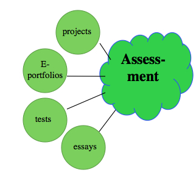

6.8 Avaliação da aprendizagem



“Fiquei impressionada com a forma como a avaliação surgia sempre no final, não apenas na unidade de trabalho, mas também no planejamento dos professores... A avaliação era quase um pensamento tardio...
Os professores... encontram-se encurralados entre objetivos concorrentes da... avaliação e sentem-se frequentemente confusos e frustrados com as dificuldades que experimentam ao tentarem conciliar as exigências.”
Earle, 2003
6.8.1 A avaliação do aprendiz na era digital
Como a avaliação constitui um tema vasto, é importante deixar claro que o objetivo desta seção é:
(a) analisar um dos componentes que constituem um ambiente de aprendizagem eficaz e abrangente e;
(b) examinar brevemente em que medida a avaliação está ou deve mudar na era digital.
A avaliação é também discutida ao longo do livro, mas particularmente no:
- Cenário C
- Capítulo 5, Seção 4.6
- Capítulo 8, Seção 7.3 (Inteligência Artificial)
- Capítulo 11, Seção 4.3
- Capítulo 12, Seção 11.
No entanto, a avaliação exige uma seção própria. Provavelmente, nada orienta mais o comportamento dos estudantes do que a forma como serão avaliados. Nem todos os estudantes são instrumentais na sua aprendizagem, mas dadas as pressões concorrentes sobre o tempo dos alunos na era digital, a maioria dos aprendizes "bem-sucedidos" foca no que será avaliado e na forma como podem responder mais eficazmente às exigências da avaliação (o que para a maioria dos estudantes significa no menor tempo possível). Por conseguinte, as decisões sobre os métodos de avaliação serão fundamentais para a construção de um ambiente de aprendizagem eficaz na maior parte dos contextos.
6.8.2 O objetivo da avaliação
Existem muitas razões diferentes para avaliar os estudantes. É importante ter clareza sobre o objetivo da avaliação, uma vez que é pouco provável que um único instrumento de avaliação responda a todas as necessidades. Eis algumas razões (você provavelmente conseguirá pensar em muitas outras):
- melhorar e alargar a aprendizagem dos estudantes;
- avaliar os conhecimentos e a competência dos estudantes em termos dos objetivos ou resultados de aprendizagem pretendidos;
- fornecer ao professor feedback sobre a eficácia do seu ensino e sobre a forma como este pode ser melhorado;
- fornecer informações aos empregadores sobre o que o estudante sabe e/ou consegue fazer;
- selecionar estudantes para estudos posteriores, empregos ou progressão profissional;
- para efeitos de prestação de contas institucional e/ou fins financeiros.
Deixo ao seu critério decidir a ordem de importância destas razões para a criação de um ambiente de aprendizagem eficaz.
6.8.3 Métodos de avaliação
A forma que a avaliação assume, bem como o seu objetivo, será influenciada pela epistemologia subjacente aos professores ou examinadores: aquilo que consideram constituir o conhecimento e, por conseguinte, a forma como os estudantes necessitam de demonstrar os seus saberes. A forma de avaliação deve também ser influenciada pelos conhecimentos e competências de que os estudantes necessitam na era digital, o que significa focar tanto na avaliação de competências como na avaliação do conhecimento de conteúdos. Assim, a avaliação contínua ou formativa será uma consideração tão importante como a avaliação sumativa ou de "fim de curso".
Existe uma vasta gama de métodos de avaliação possíveis. Selecionei apenas alguns para ilustrar de que forma a tecnologia pode alterar o modo como avaliamos os estudantes de forma relevante para a era digital:
6.8.3.1 Ausência de avaliação
Uma questão a considerar consiste em saber se existe, desde logo, necessidade de avaliar a aprendizagem. Podem existir contextos, tais como uma comunidade de prática, onde a aprendizagem é informal, cabendo aos próprios aprendizes decidir o que desejam aprender e se estão satisfeitos com o que aprenderam. Noutros casos, os aprendizes podem não pretender ou necessitar de ser formally avaliados ou classificados, mas pretendem ou necessitam de feedback sobre a evolução da sua aprendizagem: "Compreendo isto realmente?" ou "Como me situo em comparação com os outros aprendizes?".
No entanto, mesmo nestes contextos, alguns métodos informais de avaliação por parte de especialistas, especialistas na matéria ou participantes mais experientes poderiam ajudar os outros participantes a alargar a sua aprendizagem, fornecendo feedback e indicando o nível de competência ou de compreensão que um participante atingiu ou ainda necessita de alcançar. Por fim, os próprios estudantes podem ampliar a sua aprendizagem participando tanto na autoavaliação como na avaliação por pares, preferencialmente sob a orientação e monitoramento de um professor mais informado ou qualificado.
6.8.3.2 Testes de múltipla escolha baseados no computador
Este método é adequado para testar conhecimentos "objetivos" de fatos, ideias, princípios, leis e procedimentos quantitativos em matemática, ciências e engenharia, etc., revelando-se rentável para estes fins. Contudo, esta forma de teste tende a ser limitada para avaliar competências intelectuais de nível superior, como a resolução de problemas complexos, a criatividade e a avaliação, sendo, por conseguinte, menos provável que seja útil para desenvolver ou avaliar muitas das competências necessárias na era digital.
6.8.3.3 Ensaios escritos ou respostas curtas
Este método é adequado para avaliar a compreensão e algumas das competências intelectuais mais avançadas, como o pensamento crítico, mas exige muito trabalho, está sujeito à subjetividade e não é adequado para avaliar competências práticas.
Estão sendo realizadas experiências de avaliação automatizada de redações recorrendo a desenvolvimentos na inteligência artificial, mas até ao momento esta abordagem continua a ter dificuldades em identificar o significado semântico válido, sobretudo no nível do ensino superior. Para mais debates sobre a avaliação automatizada de ensaios, consulte o Capítulo 8, Seção 7.3.
6.8.3.4 Avaliação por pares
Trata-se de um tema muito amplo e especializado, que abordei no Capítulo 5, Seção 4.6.2. Existem três grandes vantagens na avaliação por pares:
- se conduzida corretamente, pode constituir um excelente benefício pedagógico para a aprendizagem dos estudantes, uma vez que exige que estes reflitam criticamente sobre o que aprenderam para poderem julgar o trabalho dos colegas. Permite-lhes compreender as perspectivas dos outros alunos sobre os conceitos e ideias, alargando e aprofundando a sua compreensão;
- permite escalar o apoio ao aprendiz, permitindo aos professores gerir um número maior de estudantes;
- desenvolve uma competência fundamental do século XXI, que é a avaliação por pares, crítica para o trabalho em uma sociedade digital.
No entanto, se não for realizada de forma adequada, a avaliação por pares pode ter consequências desastrosas. Não sou especialista nesta área, mas utilizei a avaliação por pares no ensino on-line, apenas em nível de pós-graduação. Estas são algumas das lições que aprendi:
- Deve existir um benefício intrínseco para os estudantes que realizam a avaliação. Devem compreender de que forma isto será útil para a sua própria aprendizagem.
- O professor deve fornecer critérios ou rubricas de avaliação claros, de preferência com exemplos de respostas boas ou fracas.
- Os estudantes devem ser recompensados com notas ou elogios por parte do professor por avaliações excelentes dos pares.
- Os estudantes precisam de saber que o professor não só monitorará as avaliações dos pares, como também assumirá a responsabilidade pelas decisões finais sobre as notas ou classificações atribuídas e reverterá as avaliações incorretas feitas pelos alunos.
- Não coloque todos os ovos na mesma cesta. É prudente dispor de um método de avaliação paralelo ou independente, como testes de múltipla escolha, ou ter metade da avaliação total do curso realizada de forma mais tradicional.
Assim, existem melhores práticas que devem ser seguidas. Quem pretender utilizar a avaliação por pares deve preparar-se adequadamente, consultando com atenção a literatura. Macdonald (2015) ou Topping (2018) oferecem guias para professores. Para um exemplo de utilização bem-sucedida da avaliação por pares a nível pós-secundário, ver Peer Evaluation as a Learning and Assessment Strategy at the School of Business at Simon Fraser University.
6.8.3.5 Trabalho de projeto
O trabalho de projeto incentiva o desenvolvimento de competências autênticas que exigem a compreensão de conteúdos, a gestão do conhecimento, a resolução de problemas, a aprendizagem colaborativa, a avaliação, a criatividade e a obtenção de resultados práticos. O planejamento de trabalhos de projeto válidos e práticos exige um elevado nível de competência e imaginação por parte do professor, e o processo de avaliação pode exigir muito trabalho, mas o trabalho de projeto constitui uma das melhores formas de avaliar as competências de alto nível necessárias na era digital.
O texto "Assessing student project work", de Melinda Kolk no site The Creative Educator, fornece excelentes diretrizes sobre a avaliação de trabalhos de projeto dos estudantes. Embora se destine a professores da educação básica, é igualmente adequado para educadores do ensino superior.
6.8.3.6 e-Portfólios (uma coletânea on-line de trabalhos dos estudantes)
Os e-portfólios permitem a autoavaliação através da reflexão, da gestão do conhecimento, do registro e da avaliação de atividades de aprendizagem (como a prática docente ou de enfermagem) e do registro do contributo individual para o trabalho de projeto (como exemplo, ver a utilização de e-portfólios em Artes Visuais e Ambiente Construído na Universidade de Windsor). Os e-portfólios são normalmente autogeridos pelo estudante, mas podem ser disponibilizados ou adaptados para efeitos de avaliação formal ou entrevistas de emprego.
6.8.3.7 Simulações, jogos educativos (normalmente on-line) e mundos virtuais
Estes permitem a prática e a avaliação de competências, tais como:
- tomada de decisões complexas em tempo real,
- operação de equipamentos complexos (simulados ou remotos),
- o desenvolvimento de procedimentos e de sensibilização para a segurança,
- a assunção de riscos e a tomada de decisões em um ambiente seguro, atividades que exigem uma combinação de competências manuais e cognitivas (ver a formação dos agentes dos Serviços de Fronteiras canadenses no Loyalist College, Ontário).


As simulações e os jogos sérios ou educativos (discutidos de forma mais ampla no Capítulo 13) são atualmente caros de desenvolver, mas revelam-se rentáveis com utilizações múltiplas, sempre que substituem a utilização de equipamentos extremamente caros, quando as atividades operacionais não podem ser interrompidas para fins de treinamento ou quando estão disponíveis como recursos educacionais abertos. Como as ações e as decisões dos estudantes são registradas, a avaliação autêntica encontra-se integrada no próprio processo.
6.8.4 Conclusão
Nada tende a impulsionar mais a aprendizagem dos estudantes do que o método de avaliação. Ao mesmo tempo, os métodos de avaliação estão mudando rapidamente e tendem a continuar a mudar. Pode-se observar que alguns destes métodos de avaliação são tanto formativos, ao ajudarem os estudantes a desenvolver e a aumentar a sua competência e conhecimentos, como sumativos, ao avaliarem os níveis de conhecimento e competência no final de uma disciplina ou programa. Na era digital, a avaliação e o ensino tornar-se-ão ainda mais integrados e contíguos. Existe uma gama crescente de ferramentas digitais que podem enriquecer a qualidade e a diversidade da avaliação dos estudantes. Por conseguinte, a escolha dos métodos de avaliação e a sua relevância para os restantes componentes constituem elementos vitais de qualquer ambiente de aprendizagem eficaz.
Referências
Earle, L. (2003) Assessment as Learning Thousand Oaks CA: Corwin Press
Macdonald, B. (2015) Peer assessment that works: A guide for teachers Lanham MD: Rowan and Littlefield
Topping, K. (2018) Using Peer Assessment to Inspire Reflection and Learning London UK: Routledge
Atividade 6.8 Quais avaliações funcionam na era digital?
- Existem outros métodos de avaliação relevantes para a era digital que eu deveria ter incluído?
- Verifica-se ainda uma forte dependência de testes de múltipla escolha baseados no computador em grande parte do ensino, principalmente por razões de custo. No entanto, embora existam exceções, eu argumentaria que estes não avaliam verdadeiramente as competências conceituais de alto nível necessárias na era digital. Você concorda?
- Existem outros métodos igualmente econômicos, nomeadamente em termos de tempo do professor, mais adequados para a avaliação na era digital? Por exemplo, considera que a avaliação automática de ensaios constitui uma alternativa viável?
- Seria útil pensar na avaliação logo no início do planejamento da disciplina, e não no final? Isso é viável?
- No Cenário D, "Desenvolvendo o pensamento histórico", o professor utilizou a avaliação para ajudar a desenvolver e avaliar as competências necessárias na era digital de forma eficaz? Se sim, como, e se não, por quê?
Para minhas considerações sobre esta atividade, clique no podcast abaixo:
Um elemento de áudio foi excluído desta versão do texto. Você pode ouvi-lo on-line aqui: https://pressbooks.bccampus.ca/teachinginadigitalagev2/?p=380